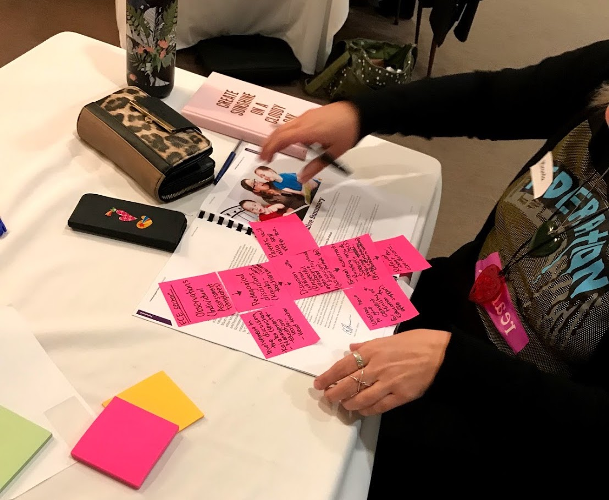
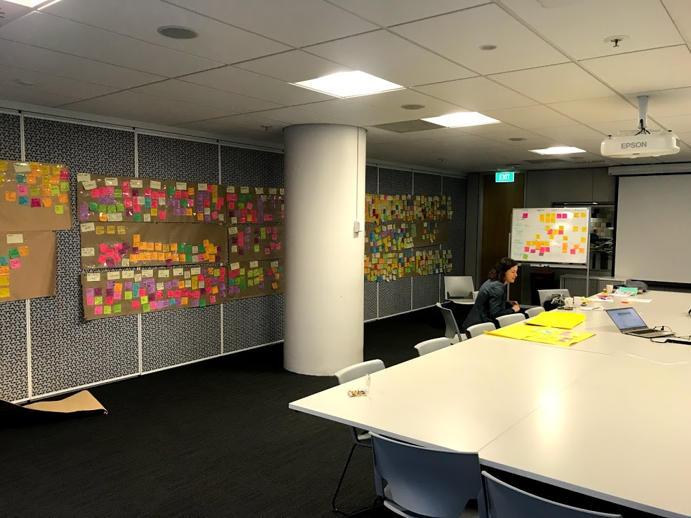
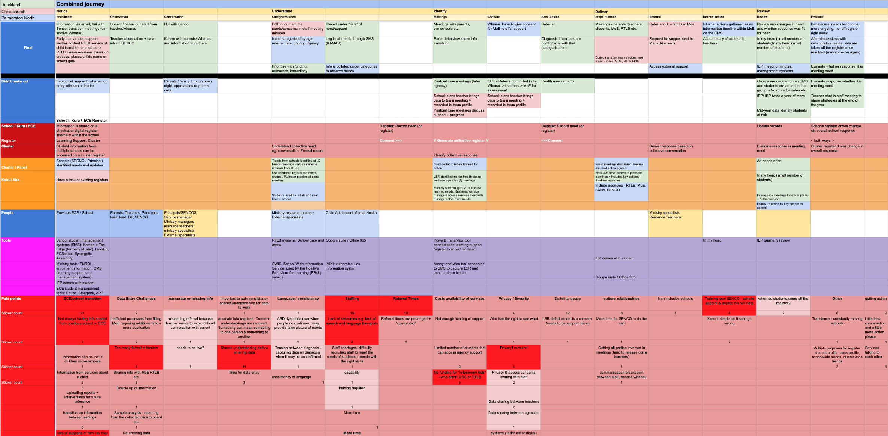
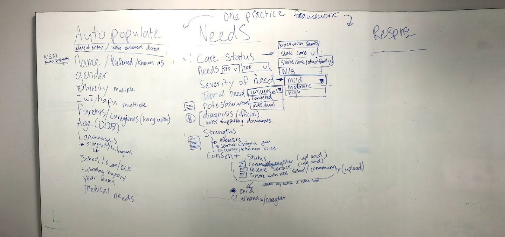
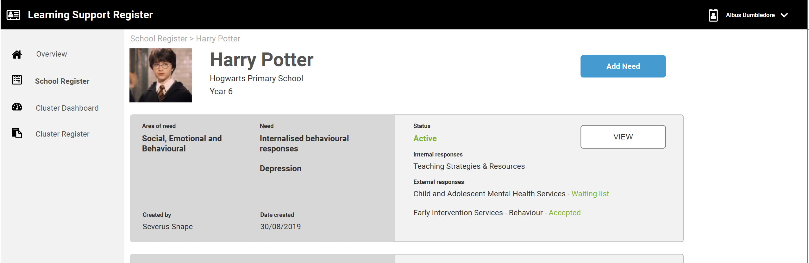
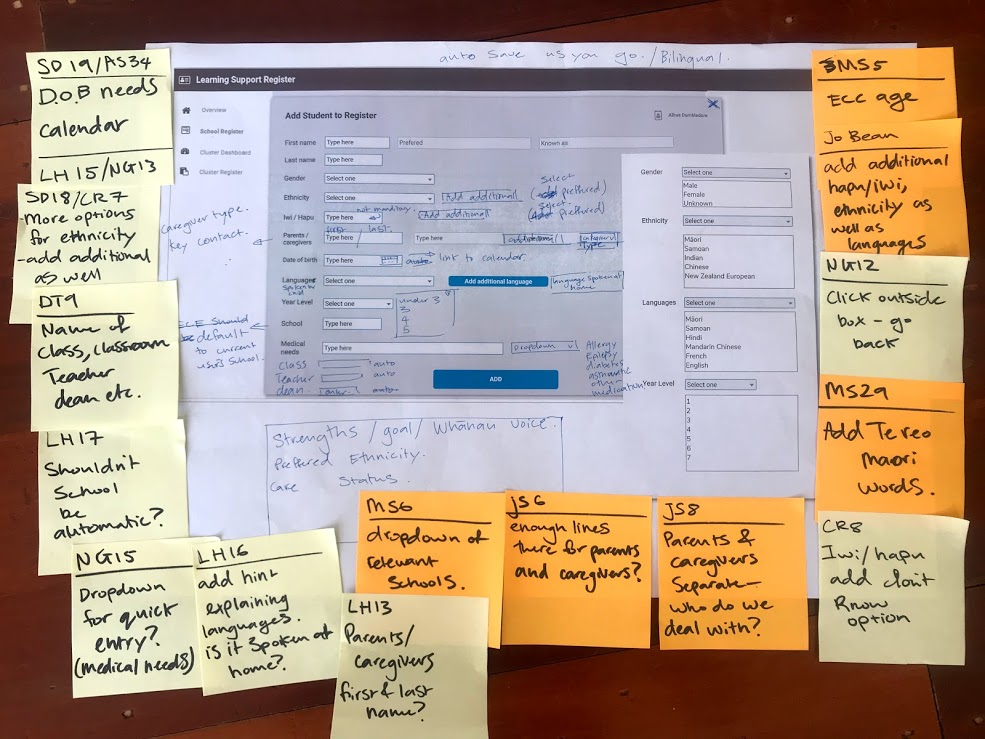

Learning Support Register
Supporting student learning at every step of the journey
Background
Many students require learning support from a number of government agencies during the span of their learning journey. Information on individual student’s learning history and their needs typically remains within the government bodies or agencies involved and is not shared. There is no national database to capture this information in a safe, secure way.
This is a particular problem for primary and secondary schools when a student has changed schools and schools are planning optimal learning support in the new educational setting.
Challenges
New Zealand educators in early childhood, primary and secondary schools are under-resourced and operate as independent institutions with their own internal systems in place for student management. There are tensions between the educators and the Ministry of Education (MoE), which can mean a government-led initiative is met with skepticism.
Objective
The aim of this project was to collaborate with educators from around New Zealand to design a tool that could be integrated into existing student management workflows to capture student learning information. By enabling the right information to flow between school clusters and MoE securely, schools can access funding and give students the support they need to learn and grow.
My Role
I was contracted by the Ministry of Education to embed with the Strategy and Innovation team and conduct Design research and UX design of a Learning Support Register for NZ educators.
The Approach
Discovery phase
I talked to teachers throughout NZ at a series of co-design workshops to understand how learning support differs between each region. Using the data collected from the workshops, I was able to group tasks into common channels and establish a rough framework for which we could build on. As a team we further refined the framework to ensure it worked for all regions of New Zealand. I entered information from the post-it notes into a Google sheet document to share with the team and get feedback. Once the team was happy with the direction, I lay out a journey map, using feedback from the teachers.
 
Design phase
With the journey map as a starting point, educators were asked to list what they needed from a management software and how that would fit into the framework developed from the discovery workshops. I then summarised these findings and produced a design in Axure to test with educators.
Refinement
I set up and led the team to conduct user testing for the initial prototype. This involved writing up an SOP and conversation guide for the team to follow. I attended each session as a note taker and mentored the group on user testing best-practice. To make it easier to talk about students learning, I modelled the data in the prototype on the Hogwarts School of Witchcraft and Wizardry. This let participants talk freely about the issues they face while keeping students’ names anonymous. We then reviewed the notes from each session and came up with a recommendation document for the 3rd party software vendor to model the software off.
 Outcomes
I created a design recommendations document that was used by a Business Analyst to define the software requirements. The Learning Support Register software is currently in development with the Ministry of Education and a 3rd party vendor and they are set to begin trials later this year.
Things I Learnt
- Government organisations are complex entities with their own unique social structures. You need to understand these before even contemplating making a change
- Being comfortable not knowing all the answers and admitting that